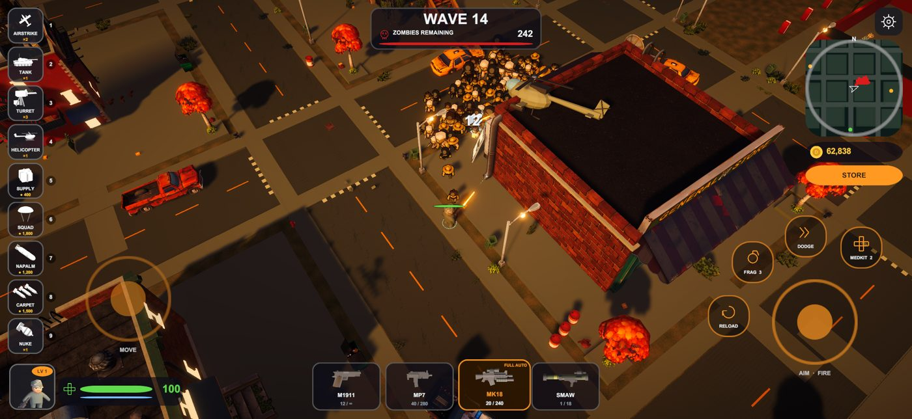
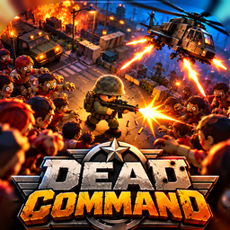

Zombie survival for iPhone and iPad · solo or 2-player co-op
Support
Need help, found a bug or have an idea? Send us a message and include your device model and iOS version. We read every report.
Frequently asked questions
How do I play?
The left stick moves your soldier. Push the right stick toward the infected to aim and fire; the sights snap onto the closest target. Tap a weapon card to switch weapons. Backup calls (airstrike, tank, helicopter and more) sit down the left side of the screen.
How does co-op work?
Tap CO-OP on the main menu. Host a squad and share the 6-letter code with a friend, enter a friend's code and tap JOIN, or use QUICK MATCH to team up with anyone online. Kills pay both players, and squad scores go on their own world ranking.
Where are the leaderboards?
Tap WORLD RANKINGS on the main menu. You need to be signed in to Game Center (Settings › Game Center) for your scores to appear.
I bought coins but didn't receive them.
Purchases are processed by Apple. Make sure you are online and restart the game. If the coins still don't appear, contact us with the date of the purchase; for refunds use reportaproblem.apple.com.
Will I lose my progress if I delete the app?
Yes. Coins, unlocks and outfits are stored on your device, so deleting the app removes them.